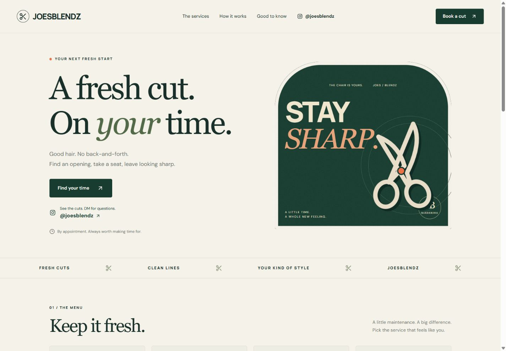
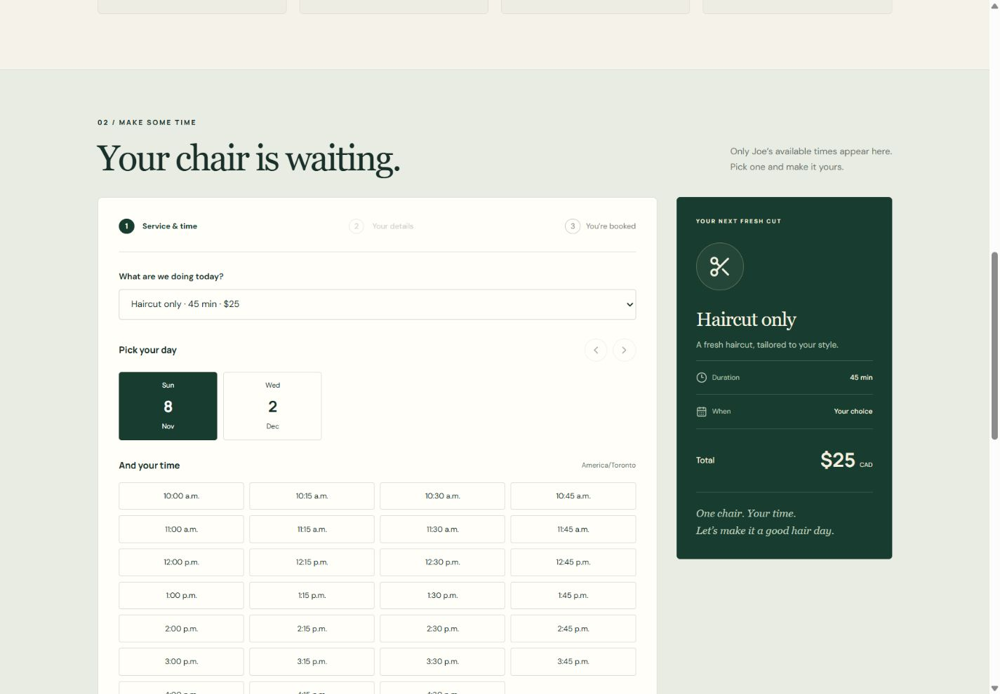

01 / Client project / Live website
Joe’s Blendz
A real booking website for a part-time barber, with a customer booking flow and an owner dashboard for managing services, availability, and appointments.
- My role
- Website development
- Context
- Independent client project
- Status
- Live website

Booking around a changing schedule.
A part-time barber doesn’t necessarily keep the same hours every day. Joe needed to add the times he was available and let customers book those openings without arranging every appointment over messages.
I built the customer-facing website and owner workflow around that constraint: availability first, appointments second.
How it works
The owner sets the schedule.
A password-protected dashboard lets Joe add work windows, manage services and prices, and review appointments.
The customer chooses a service and time.
Available slots account for the selected service’s duration, booking notice, and existing appointments.
A confirmed booking occupies that time.
The application prevents overlapping appointments and provides an on-screen confirmation, a private cancellation link, and a calendar download.
Tools & technical decisions
- React + TypeScript
- Interactive booking steps and owner dashboard components, with typed service and booking data.
- Tailwind CSS + custom styling
- A responsive interface and consistent visual treatment across customer and owner views.
- Cloudflare Workers + D1
- Hosted application logic and persistent service, availability, and appointment data.
- Drizzle ORM
- Schema definitions for the SQLite-backed data model.
The central design decision: availability is calculated from work windows and occupied time, rather than treating every displayed time as an independent appointment slot.
Current scope
The public booking site is live. Customers pay at their appointment; online payments and automatic email or SMS reminders are not included. They need to save their booking confirmation and cancellation link.
